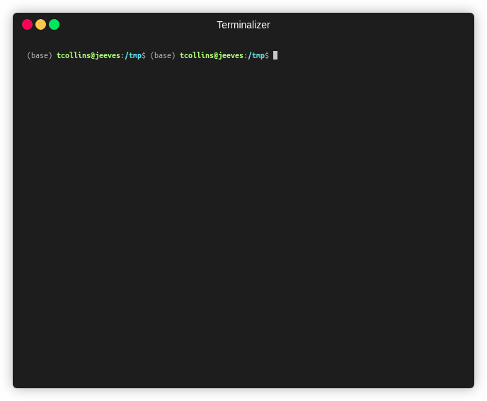

Quick Start
Installation
Install from the Git repository:
pip install git+https://github.com/analogdevicesinc/pyadi-dt.git
For XSA pipeline support (requires Vivado sdtgen / lopper on PATH):
pip install "git+https://github.com/analogdevicesinc/pyadi-dt.git#egg=adidt[xsa]"
For development with all test dependencies:
pip install -e ".[dev]"
Generate a device tree from an XSA file
The fastest way to produce a device tree from a Vivado design:
adidtc xsa2dt -x design.xsa --profile ad9081_zcu102 -o out/
This runs the full pipeline — sdtgen, topology parsing, node building
via BoardModel, and DTS merging — and writes a .dts file ready for
dtc compilation.
Use --lint to run the structural linter before writing output:
adidtc xsa2dt -x design.xsa --profile adrv9009_zcu102 --lint -o out/
Browse available profiles before running the pipeline:
adidtc xsa-profiles # list all profiles
adidtc xsa-profile-show ad9081_zcu102 # show profile details as JSON
Compose a device tree from Python
Build a design out of typed devices and let the System
orchestrator render it:
import adidt
# Pre-wired AD9081-FMC-EBZ evaluation board.
fmc = adidt.eval.ad9081_fmc()
fmc.reference_frequency = 122_880_000
fmc.converter.set_jesd204_mode(18, "jesd204c")
fmc.converter.adc.sample_rate = int(250e6)
fmc.converter.dac.sample_rate = int(250e6)
fmc.converter.adc.cddc_decimation = 4
fmc.converter.adc.fddc_decimation = 4
fmc.converter.dac.cduc_interpolation = 12
fmc.converter.dac.fduc_interpolation = 4
# Target FPGA platform — ZCU102, VPK180, VCU118 are built in.
fpga = adidt.fpga.zcu102()
# Compose the system and declare its wiring.
system = adidt.System(name="ad9081_zcu102", components=[fmc, fpga])
system.connect_spi(bus_index=0, primary=fpga.spi[0],
secondary=fmc.clock.spi, cs=0)
system.connect_spi(bus_index=1, primary=fpga.spi[1],
secondary=fmc.converter.spi, cs=0)
# Add the JESD204 links (ADC → FPGA, FPGA → DAC).
system.add_link(source=fmc.converter.adc, sink=fpga.gt[0],
sink_reference_clock=fmc.dev_refclk,
sink_core_clock=fmc.core_clk_rx,
sink_sysref=fmc.dev_sysref)
system.add_link(source=fpga.gt[1], sink=fmc.converter.dac,
source_reference_clock=fmc.fpga_refclk_tx,
source_core_clock=fmc.core_clk_tx,
sink_sysref=fmc.fpga_sysref)
print(system.generate_dts())
The same example is runnable at examples/ad9081_fmc_zcu102.py.
See Declarative Devices for the full device catalog and the “Writing a new device” pattern.
Edit a BoardModel before rendering
Both the XSA pipeline and the declarative API converge on a
BoardModel that you can inspect and modify before
rendering:
import adidt
system = adidt.System(name="test", components=[...])
system.connect_spi(...); system.add_link(...)
model = system.to_board_model()
clock = model.get_component("clock")
rx = model.get_jesd_link("rx")
# Inspect link framing parameters.
print(rx.link_params)
# Render to DTS.
from adidt.model.renderer import BoardModelRenderer
nodes = BoardModelRenderer().render(model)
for section, items in nodes.items():
for node in items:
print(node)
Inspect a device tree on live hardware
Read device tree properties from a running board over SSH:
adidtc -c remote_sysfs -i 192.168.2.1 prop -cp adi,ad9361 clock-output-names
{kind=link}

See Live Update Access Models for local sysfs, remote SSH, SD card, and file-based access modes.
Analyze device tree dependencies
Visualize include dependencies and missing headers in a device tree file:
adidtc deps overlay.dts --format tree
adidtc deps overlay.dts --format dot -o deps.dot # Graphviz output
Next steps
Declarative Devices — Full declarative device API + catalog
XSA Flow Tutorials — Step-by-step XSA-to-DTS walkthrough
XSA + adijif Tutorial — Derive JESD parameters with
pyadi-jifbefore running the XSA pipelineMCP Server — Use pyadi-dt tools from Claude or Cursor via MCP
Board Model — BoardModel reference
XSA Pipeline — Developer Guide — Pipeline architecture and adding new boards